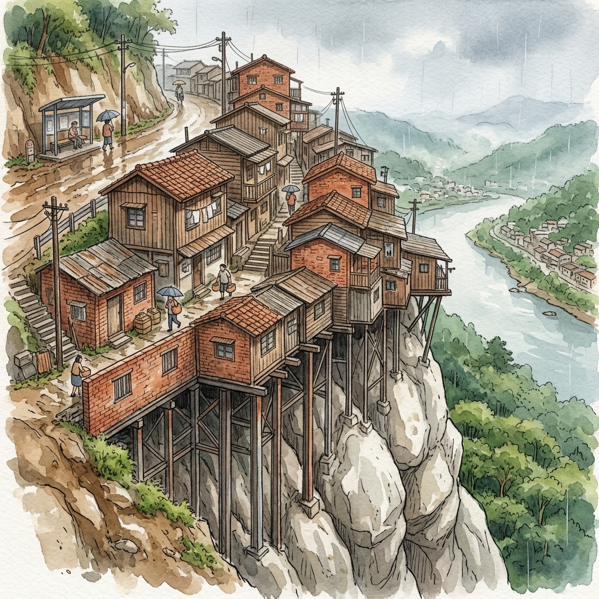

新店路上的摩天嶺：坡地聚落與建築奇蹟

新店路上居然也有「摩天嶺」？！原來，從開天宮轉出後，右轉沿著新店路往北宜路方向走，是一條長長且地勢陡峭的坡道。在此居住了半個世紀的陳啟川大哥笑著回憶道：「因為真的是很陡的山路啦！以前大家都開玩笑叫它摩天嶺啦！」
這段長長的斜坡聚落，不僅因為陡峭的地形在老新店人口中留下名號，更因為幾十年來交疊的複雜歷史，成為理解坡地庶民生活的縮影。
一、 圍牆外的違建與紅燈戶往事
回憶起昔日生活，陳啟川大哥想起剛搬來這裡時，新店國小的圍牆外多是退伍老兵與退伍軍人搭建的簡陋違建。這些違章建築在物資匱乏的戰後初期如雨後春筍般出現，隨後，有些屋主將其轉租給從事特種行業的風塵女子，留下一段新店街巷中獨特而感傷的紅燈戶印記。
民國 71 年（1982）新店國小因校園規畫重建校門，將大門從國校路移往北宜路。每當上下課鐘聲響起，學童們排著路隊走下摩天嶺時，常會看見那些倚在簡陋門框邊招攬客人的風塵女子，甚至有些孩子在耳濡目染下，開始模仿她們的言語和招手動作。這引起了校方與家長的極大憂慮，在當時甚至一度引發社會新聞的廣泛關注與討論。
二、 納莉颱風與懸空屋的墜落
摩天嶺所處的地質，實際上屬於極為穩固且堅硬的大岩石（即開天宮地底延伸的巨大岩盤）。地質雖硬，但早年建屋時，許多住戶法規觀念薄弱且輕忽了坡地風險。他們為了擴大使用空間，依山坡建造房屋卻不肯紮實向下打地基，僅僅使用幾根簡陋的柱子支撐在山坡的薄薄表土或擋土牆上，形成了下方近乎「懸空」或「騰空」的驚險結構。
民國 90 年（2001）強烈颱風「納莉」來襲，強風夾帶驚人暴雨，鬆動了摩天嶺山坡的表土。豪雨引發的土石流瞬間沖刷而下，三間建在陡坡邊緣、下方懸空的房子，就這樣伴隨著土石滾滾跌落溪底，現場怵目驚心。
這場災難之後，政府決心推動新店路道路拓寬與整頓工程。隨著建物被強制拆遷或輔導改建，這段長達數十年的紅燈戶歷史，也正式在摩天嶺消逝，走入了歷史的塵埃中。
三、 向下生長：磐石上的六層樓奇蹟
由於摩天嶺的土地早期多屬於國有財產局或水利會所有，部分因道路拓寬而被拆除一半房屋的住戶，政府當時提供了大約五十萬元的拆遷補貼金，並允許居民在原地上進行重建或整修。
為了在原址求生存，許多居民以買賣「地上物使用權」的方式集資重建。面對如此嚴峻的陡坡落差，現代建築工法展現了令人驚嘆的智慧——新建住家不再使用脆弱的懸空支撐，而是請來工程隊，使用多達 30 幾支粗壯的鋼樁死死咬住岩盤，直接將房屋結構「鎖」在堅硬的巨大磐石上！
這種「磐石建屋」的奇特工法，造就了這裡絕無僅有的空間景觀：
從新店路（坡頂馬路）看過去，這些房屋明明只是普通的一、兩層樓平房，外表看似低調；然而，若是從坡底的新店後街或河岸回望，這些房屋其實順著陡峭的山壁向下建了整整六層樓！這棟「向下生長」的磐石之家，成為新店路上最令人嘖嘖稱奇的建築景觀。
摩天嶺的陡坡，既收納過底層弱勢女子安身立命的辛酸淚水，也見證了納莉風雨中的無情摧折。如今，那一根根深鎖在岩盤中的鋼樁，如同後街人不向環境妥協的精神，將家園穩穩地錨定在這片土地上。